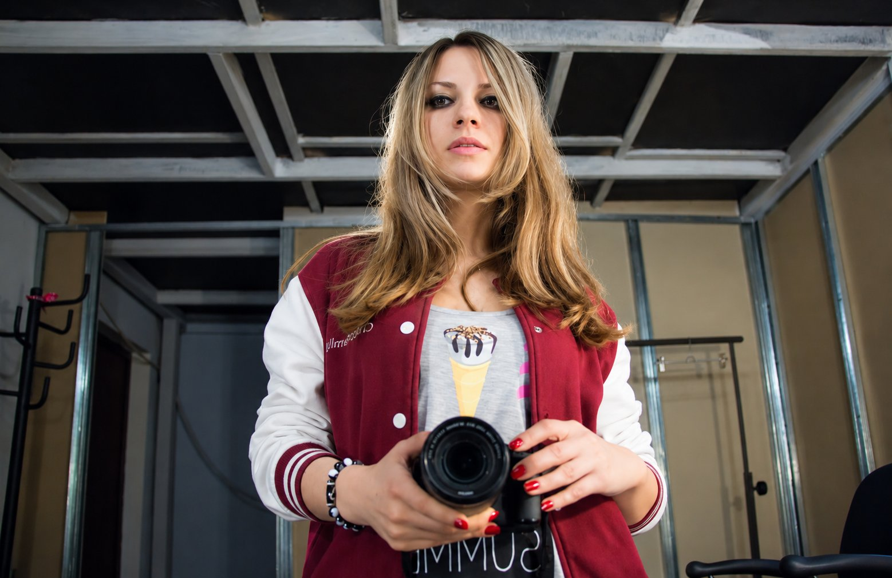

Мен туралы
Мен Вероника Ким, алматылық фотографпын. 2017 жылдан бері түсіремін: сандық камераға және таспаға, дроннан және су астында.

Маған авторлық көзқарас қызық: өзім ойлап тауып, нөлден құрастыратын студиялық сеттер мен арт-жобалар. Сандық фотода ашық, қанық түсті ұнатамын. Таспаға тек ақ-қара орта форматты түсіремін.
Өз зертханам бар. Таспаны өзім өңдеп, басылымдарды өзім басамын: түсіру сәтінен дайын параққа дейін жұмыс бір қолда қалады.
Алматы мен Астанада жұмыс істеймін, көшпелі түсірілімдерге шығамын.
Техника
- Canon EOS R
- Rolleiflex, екі объективті
- Mamiya, орта формат
- Дрон: фото мен видео
- Су асты боксы
Нені түсірмеймін
Үлкен тойлар мен көп адам жиналатын іс-шараларды түсірмеймін. 20 адамға дейінгі шағын оқиғаларды жеке талқылаймыз.